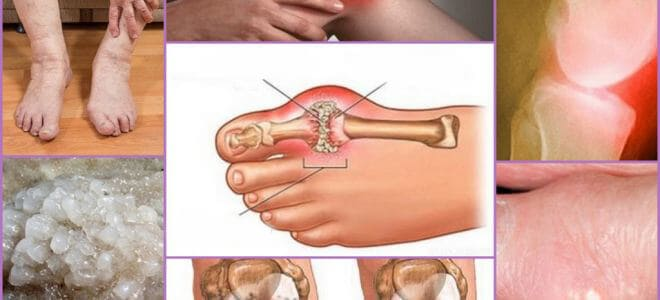
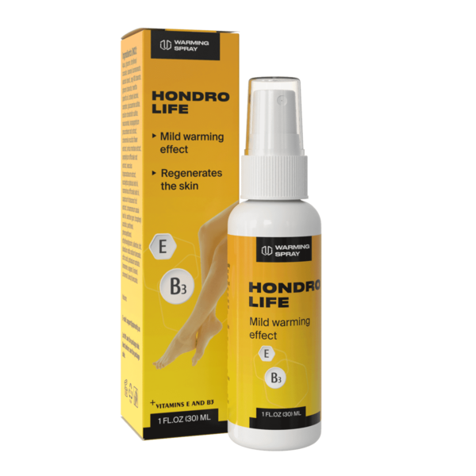
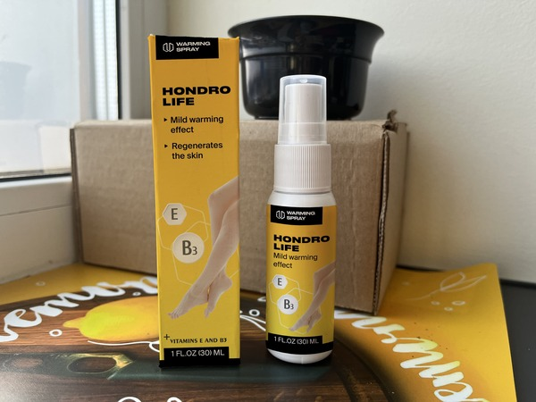
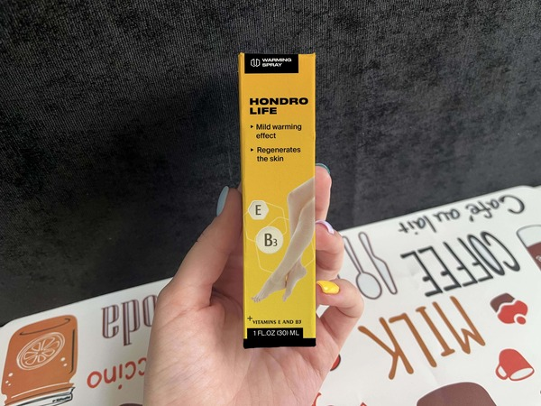
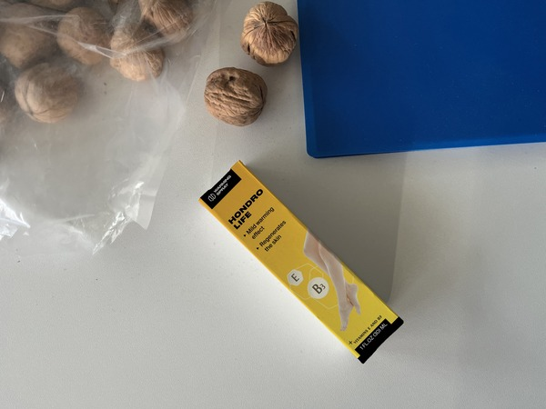

«Η προσέγγιση των
Ελλήνων στη θεραπεία των αρθρώσεων είναι απλά αινιγματική». Διάσημος γερμανικός Ρευματολόγος
έδωσε μια αποκαλυπτική συνέντευξη σε Ελληνικό ΜΜΕ
Karl Kirschmayer Επικεφαλής του Κέντρου Ρευματολογίας
Tumorzentrum Eva Mayr-Stihl στην παγκοσμίως γνωστή κλινική Charité στο Βερολίνο:
Οι ασθένειες των αρθρώσεων προκαλούνται από ένα μόνο πράγμα, το οποίο αγνοείται εντελώς από
τους Έλληνες γιατρούς.
Δρ Karl Kirschmayer: «Στην Ελλάδα, οι ασθένειες των
αρθρώσεων εξακολουθούν να αντιμετωπίζονται με παρωχημένα και αναποτελεσματικά φάρμακα
που απαιτούν συνεχή χορήγηση εφ’ όρου ζωής. Ενώ στην Ευρώπη, οι αρθρώσεις
αντιμετωπίζονται τόσο εύκολα όσο ένα κοινό κρυολόγημα».
Πέρυσι, ο Karl Kirschmayer επισκέφθηκε την Ελλάδα για να εξοικειωθεί
με
την εμπειρία των Ελλήνων συναδέλφων του. Αυτό που διαπίστωσε, σύμφωνα με τον ίδιο,
είναι πολύ
δύσκολο να εξηγηθεί. Ο Karl Kirschmayer θεωρεί ότι στη χώρα μας, η επιστήμη της
ρευματολογίας
έχει παραμείνει στο επίπεδο των μέσων του περασμένου αιώνα.
Μετά από μεγάλα συνέδρια στη Γερμανία, ο Δρ Karl Kirschmayer δέχτηκε
να
δώσει μια συνέντευξη σε ένα Ελληνικό ΜΜΕ. Τι αντιπαθεί ο διάσημος γιατρός στην ελληνική
ιατρική
προσέγγιση και για ποιο λόγο ισχυρίζεται ότι οι ΕΛΛΗΝΕΣ ασθενείς με προβλήματα αρθρώσεων
δεν θα γίνουν ποτέ καλά;
- Όταν απαντήσατε στις ερωτήσεις των Γερμανών δημοσιογράφων,
είπατε
ότι είστε συγκλονισμένοι από αυτό που είδατε στην Ελλάδα. Θα μπορούσατε να σχολιάσετε
αυτό το
θέμα;
- Πρώτα απ' όλα, επιτρέψτε μου να πω ότι δεν έχω τίποτα εναντίον
της Ελλάδας, του ελληνικού πολιτισμού ή του λαού. Όμως, η υγειονομική περίθαλψη στη χώρα
μας είναι πραγματικά σοκαριστική. Βρίσκεται τουλάχιστον 20, ίσως και για 30 χρόνια
πίσω. Τουλάχιστον, σε ότι αφορά τη θεραπεία ασθενειών των αρθρώσεων και του μυοσκελετικού
συστήματος. Μπορούμε να πούμε ότι η ρευματολογία ως επιστήμη δεν υπάρχει στην
Ελλάδα.
Ας δούμε τι συνιστούν οι γιατροί στους Έλληνες για τη θεραπεία του
πόνου των αρθρώσεων - ∆ικλοφαινάκη, Κετοπροφαίνη, Ναπροξένη, Ινδομεθακίνη, Νιμεσουλίδη και
άλλα παρόμοια φάρμακα.
Με αυτόν τον τρόπο ΔΕΝ ΘΕΡΑΠΕΥΟΝΤΑΙ ΟΙ ΑΡΘΡΩΣΕΙΣ και οι ΧΟΝΔΡΟΙ, δεν
αρκεί μόνο να αφαιρέσετε τα συμπτώματα της πάθησης - τον πόνο, τη φλεγμονή, και το πρήξιμο.
Τώρα φανταστείτε τι
συμβαίνει στο επίπεδο του οργανισμού. Όταν ένα άτομο παίρνει ένα χάπι, εφαρμόζει μια
αναισθητική
κρέμα ή κάνει μια ένεση, ο πόνος φεύγει. Αλλά μόλις το φάρμακο παύει να λειτουργεί ο πόνος
επιστρέφει αμέσως.
Και ο πόνος είναι ένας σημαντικός δείκτης που σηματοδοτεί ότι
συμβαίνει
μια παθολογική διαδικασία στην άρθρωση. Απλά ανακουφίζοντας τον πόνο, εκθέτετε τις αρθρώσεις
σε
ακόμη μεγαλύτερες καταστροφικές επιπτώσεις. Η διαδικασία καταστροφής επιταχύνεται κατά 3-5
φορές
και τελικά οδηγεί σε μη αναστρέψιμες αλλαγές, στην πλήρη ακινητοποίηση και την αναπηρία.
Στην Ευρώπη μια τέτοια προσέγγιση στον πόνο των αρθρώσεων δεν
χρησιμοποιείται πλέον για περισσότερα από 20 χρόνια. Τα παυσίπονα χρησιμοποιούνται μόνο
σε
ακραίες περιπτώσεις, με μεγάλη ακρίβεια και προσοχή. Στη Γερμανία πωλούνται μόνο με
ιατρική
συνταγή και υπό αυστηρό έλεγχο.
Οι λεγόμενοι «χονδροπροστατευτές» απαγορεύονται συνολικά, είναι
άχρηστα
φάρμακα και τίποτα άλλο παρά μια απάτη.
Οι γιατροί και οι φαρμακοποιοί απλά δημιουργούν εθισμένους
ανθρώπους! Είναι σαφές ότι η πώληση ακριβών παυσίπονων που εξαλείφουν τα συμπτώματα είναι
πολύ
πιο επικερδής από τη θεραπεία της νόσου μια για πάντα, αποκαθιστώντας έτσι την επιδείνωση της
άρθρωσης. Αλλά πώς θα μπορούσαν να τολμήσουν να το κάνουν αυτό!
- Ποια είναι η κατάσταση στη Γερμανία για τη θεραπεία των
αρθρώσεων;
- Όλοι οι γερμανοί γιατροί, οι ρευματολόγοι, οι παθολόγοι και οι
παραϊατρικοί έχουν εδώ και πολύ καιρό καταλάβει ότι θα πρέπει να εξαλειφθούν όχι οι συνέπειες
της πάθησης, αλλά οι αιτίες της. Αυτό είναι το κλειδί για μια πλήρη, γρήγορη και ασφαλή
θεραπεία. Και ποια είναι η κύρια αιτία των προβλημάτων στις αρθρώσεις; Είναι η εναπόθεση
ορθο-αλάτων λόγω της εξασθένησης της κυκλοφορίας του αίματος και της κυκλοφορίας του αρθρικού
υγρού.
Ο ουρατές ή το άλας του ουρικού οξέος, η αιτία της ουρικής
αρθρίτιδας.
Τα οστεοφυτά ή τα ασβεστοποιημένα άλατα προκαλούν το υπόλοιπο 97% των
ασθενειών των αρθρώσεων και της σπονδυλικής στήλης. Είναι όλα τα είδη αρθρίτιδας και
οστεοαρθρίτιδας, οστεοπόρωσης, ρευματισμών, θυλακίτιδας και ακόμη και ύγρωμα. Όλες αυτές
οι
ασθένειες έχουν μια αιτία - εναποθέσεις οστεοφυτών.
Άλατα, που εναποθέτονται στις επιφάνειες των αρθρώσεων, όπως ένα
γυαλόχαρτο, τρίβει τους γύρω ιστούς - τα οστά και τους χόνδρους. Με την ανάπτυξη , οι
κρύσταλλοι
των ορθο-αλάτων αρχίζουν να τραυματίζουν τον μυϊκό ιστό, τους τένοντες, τα αιμοφόρα αγγεία και
τα τριχοειδή αγγεία, προκαλώντας φλεγμονή, λοίμωξη, οίδημα και έντονους πόνους.
Σε προχωρημένες περιπτώσεις, οι μεγάλες συσσωρεύσεις ορθο-αλάτων
μπορούν εύκολα να αποκόψουν ένα μέρος του οστού, κατά μια απότομη κίνηση, προκαλώντας έτσι
πλήρη
ανικανότητα.
Μια πολύ επικίνδυνη πεποίθηση είναι ότι το ασβέστιο είναι καλό για
τις
αρθρώσεις. Ναι, το ασβέστιο είναι καλό, αλλά μόνο αν έχετε ΥΓΙΗΣ
αρθρώσεις. Όταν οι
αρθρώσεις είναι ερεθισμένες ή ραγισμένες, σημαίνει ότι έχει σχηματιστεί ήδη γύρω από αυτά ένα
στρώμα οστεοφυτών. Εκτός από την ενίσχυση του οστικού ιστού, το ασβέστιο ενισχύει
επίσης τα
οστεοφυτικά άλατα, επιδεινώνοντας και επιταχύνοντας έτσι την ανάπτυξή τους.
Επομένως, οι Γερμανοί Ρευματολόγοι αποκαθιστούν κυρίως την κυκλοφορία
του αίματος στις αρθρώσεις, έτσι ώστε να απομακρύνονται τα άλατα που συσσωρεύονται με τα
χρόνια.
Αυτό, με τη σειρά του, ομαλοποιεί την κυκλοφορία του αρθρικού υγρού και ξεκινά τη διαδικασία
αποκατάστασης των ιστών των αρθρώσεων.

Υποτροπή Βλάβη και φλεγμονή άρθρωσης Κρύσταλλοι αλάτων Η ανάπτυξη του ορθο-άλατος στις επιφάνειες των αρθρώσεων - η
βασική αιτία όλων των παθολογικών αλλαγών
Στην πραγματικότητα, οι αρθρώσεις του ανθρώπου είναι αναγεννητικές
και
μπορούν να ανακάμψουν όπως η ουρά μιας σαύρας. Χρειάζεται μόνο να τις βοηθήσουμε λίγο σε αυτό
-
να τις απελευθερώσουμε από τα άλατα και η διαδικασία θα συνεχιστεί μόνη της.
Ακόμα στη δεκαετία του '90 του περασμένου αιώνα οι επιστήμονες
στην Ελβετία κατάφεραν να αποκτήσουν μια ειδική φόρμουλα της βιταμίνης Β, η οποία ονομάζεται
«άλφα-αρθροφερόλη». Λαμβάνεται με τη σύνθεση φυσικών συστατικών, όπως μέντα, κανέλα, έλαιο
ευκαλύπτου, νύχι του διαβόλου και εκχυλίσματα άρνικας, και πάνω από 50 άλλα εκχυλίσματα.
Αυτή η ουσία είναι ικανή να εισχωρεί βαθιά στα μόρια των αλάτων στις
αρθρώσεις και να τα σχίσει από μέσα - ως αποτέλεσμα, οι επιφάνειες των αρθρώσεων καθαρίζονται,
η
ροή του αίματος και η κυκλοφορία του αρθρικού υγρού αποκαθίστανται ΓΙΑ ΠΑΝΤΑ! Ή μάλλον, μέχρις
που το αλάτι να συσσωρευτεί και πάλι (αλλά θα χρειαστούν αρκετές δεκαετίες για αυτό). Δεν
πρέπει
να χρησιμοποιείτε συνεχώς φάρμακα για να απαλλαγείτε από τον πόνο και τη φλεγμονή. Δεν υπάρχει
λόγος να φοβάστε ότι η άρθρωση "θα μπλοκάρει" για πάντα, ότι θα χάσετε εντελώς την
κινητικότητα και θα απαιτηθεί προσθετική. Οι άνθρωποι είναι απολύτως υγιείς εδώ και δεκαετίες.
Όταν είδα τα ελληνικά ιατρικά στατιστικά, έμεινα έκπληκτος!
Ξέρετε ποια
είναι η πιο συνηθισμένη αιτία αναπηρίας στην Ελλάδα; Δεν είναι ούτε καρκίνος, ούτε το AIDS,
ούτε ο διαβήτης, αλλά η αρθροπάθεια! Η απλούστερη αρθροπάθεια, η οποία θεραπεύεται στη
Γερμανία σε 2-3
εβδομάδες με το λιγότερο ακριβό φάρμακο, στην Ελλάδα οδηγεί σε αναπηρία!
Στη Γερμανία σήμερα, τα προβλήματα στις αρθρώσεις δεν θεωρούνται
επικίνδυνες παθήσεις, εκτός αν φυσικά δεν μιλάμε για σοβαρούς τραυματισμούς: κατάγματα,
θραύσεις, ρήξεις κλπ. Ο πόνος και η φλεγμονή στις αρθρώσεις μας λένε μόνο ότι είναι
«μολυσμένες»
με άλατα και είναι καιρός να τα καθαρίσουμε. Μετά από ένα πρόγραμμα 2-3 εβδομάδων
«καθαρισμού»,
οι αρθρώσεις επιστρέφουν στο φυσιολογικό και τα προβλήματα μπορούν να ξεχαστούν μέχρι την
επόμενη δεκαετία.
Οι ασθένειες των αρθρώσεων, τις οποίες οι άνθρωποι στην Ελλάδα
προσπαθούν να «θεραπεύσουν» ξεχωριστά, εδώ και πολύ καιρό τοποθετούνται στην Ευρώπη σε μία
κατηγορία που ονομάζεται ασβεστοποίηση αρθρώσεων. Αυτή περιλαμβάνει:
- Ουρική Αρθρίτιδα
- Αρθρίτιδα
- Οστεοαρθρίτιδα
- Εκφυλιστική νόσος δίσκου
- Ρευματισμός
- Οστεοπόρωση
- Θυλακίτιδα
- Τενοντίτιδα
- Ύγρωμα
Πρόκειται για μια πολύ μικρή λίστα, αλλά άλλες ασθένειες αποτελούν
υποκατηγορίες των βασικών εννέα ασθενειών που αναφέρονται παραπάνω. Για παράδειγμα, η
κοξάρθρωση
είναι ένας τύπος οστεοαρθρίτιδας, κλπ.
Αυτός ο μακρύς κατάλογος ασθενειών αντιμετωπίζεται πολύ εύκολα με
απλό
καθαρισμό των αρθρώσεων. Είναι απολύτως ασφαλές, δεν απαιτεί ιατρική παρακολούθηση και
μπορεί να
γίνει στο σπίτι.
- Πώς «καθαρίζουν» τις αρθρώσεις στη Γερμανία;
- Σήμερα υπάρχουν ειδικά σκευάσματα που έχουν σχεδιαστεί για τον
καθαρισμό των αρθρώσεων από τις αποθέσεις αλατιού. Περιέχουν άλφα - αρθροφαρόλη. Ο ηγέτης
μεταξύ τους είναι η Ψεκάστε Hondrolife. Περιέχει άλφα-αρθροφερόλη σε
ειδική,
εύκολα
εύπεπτη μορφή, λόγω
της οποίας το προϊόν είναι εξαιρετικά αποτελεσματικό.
Ένα άλλο σημαντικό πλεονέκτημα της Hondrolife
είναι
ότι
περιέχει ένα
σύμπλεγμα συστηματικών αρθρο-βιταμινών, μακρο- και μικροστοιχείων που έχουν σχεδιαστεί για τη
βελτίωση της λειτουργίας των ιστών των αρθρώσεων. Δηλαδή, έχει μια ολοκληρωμένη θεραπευτική
επίδραση στα οστά και τους χόνδρους, το αρθρικό υγρό, τις μυϊκές ίνες, τους συνδέσμους και
τους
ιστούς των τενόντων. Ένα πλούσιο φάσμα σύνθετης δράσης.
Hondrolife περιέχει πάνω από 50 συστατικά. Δεν θα
τα
απαριθμήσω όλα,
αλλά μόνο τα κύρια:
Βιταμίνες Ε, Β3
Εξαλείφουν τους στάσιμους σχηματισμούς, τρέφουν,
τονώνουν, προάγщнт την αναγέννηση των ιστών.
Πανθενόλη, αλλαντοΐνη
Σταματούν την αιμορραγία, προάγουν το σχηματισμό ενός
προστατευτικού φιλμ στους φλεγμονώδεις ιστούς.
Αιθέρια έλαια μέντας, κανέλας, ευκαλύπτου
Αποτρέπουν την καταστροφή των αρθρώσεων και των
συνδέσμων, ανακουφίζουν τον πόνο στις αρθρώσεις, τρέφουν τον συνδετικό ιστό.
Εκχυλίσματα Claw Devil, Άρνικα
Αυξάνουν την κινητικότητα των αρθρώσεων, βελτιώνουν τη
ροή του αίματος.
Γλυκοζαμίνη και χονδροϊτίνη
Ενισχύουν τον χόνδρο, τους τένοντες, τους συνδέσμους,
ανακουφίζουν τη φλεγμονή και το πρήξιμο, προωθούν την ενεργό αναγέννηση του χόνδρου.
- Hondrolife, όπως γνωρίζουμε, δεν πωλείται
στα
ελληνικά
φαρμακεία;
- Το γεγονός είναι πως όχι. Οι Έλληνες γιατροί προτιμούν να
«τροφοδοτούν» τον πληθυσμό με αναισθητικά και χονδροπροστατευτικά, αντί να κάνουν πραγματική
θεραπεία.
Επιπλέον, δεν υπάρχει αμφιβολία ότι οι Έλληνες ρευματολόγοι,
τουλάχιστον όσοι ενδιαφέρονται για τις προηγμένες μεθόδους θεραπείας, γνωρίζουν την Hondrolife
και τις αναγεννητικές της ικανότητες. Αλλά δεν διακινδυνεύουν να συνταγογραφήσουν ένα σκεύασμα
που δεν περιλαμβάνεται στον κατάλογο του Υπουργείου Υγείας.
Από όσο γνωρίζω, ο κατασκευαστής της Hondrolife
ήθελε να
εισέλθει στην
ελληνική αγορά. Αλλά δεν του επέτρεψαν να το κάνει αυτό, εφευρώνοντας εκατοντάδες φραγμούς (η
ελληνική γραφειοκρατία είναι πολύ δυνατή). Και αυτό είναι κατανοητό - αν το φάρμακο αυτό
εμφανιστεί στα φαρμακεία, η ελληνική φαρμακευτική μαφία θα υποστεί τεράστιες απώλειες.
Πράγματι, η
φαρμακολογία σήμερα είναι μια επιχείρηση! Ακόμη και στην Γερμανίας. Αλλά
στην Γερμανίας ο κλάδος αυτός
ελέγχεται από τις κυβερνήσεις.
- Τι θα συμβουλεύατε στους ανθρώπους με προβλήματα των αρθρώσεων,
που ζουν στην Ελλάδα;
- Οι απλοί άνθρωποι, ειδικά οι άνθρωποι μεγαλύτεροι από 50 ετών,
υποφέρουν
περισσότερο από αυτό το πρόβλημα της παλιομοδίτικης ελληνικής περίθαλψης. Δεν είναι δικό τους
λάθος, έτσι λειτουργεί η υγειονομική περίθαλψη.
"Ελληνικό Κέντρο Έρευνας της Ρευματολογίας "

39EURO
39EURO
Αλλά, ευτυχώς, βρήκαμε μια λύση! Η εφημερίδα μας συμφώνησε με το
Ελληνικό Κέντρο Έρευνας της Ρευματολογίας σχετικά με τη δυνατότητα πώλησης του φαρμάκου σε
προνομιακή τιμή σε όλους τους πολίτες της Ελλάδας που έχουν προβλήματα στις αρθρώσεις. Το
Κέντρο
δημιούργησε ένα ειδικό κέντρο διανομής και εμείς παρέχουμε την απαραίτητη παρτίδα του
προϊόντος.
Ως εκ τούτου, τώρα οποιοσδήποτε κάτοικος της Ελλάδας μπορεί να παραγγείλει την Ψεκάστε
Hondrolife στην προσιτή τιμή των 39EURO και να την λάβει χωρίς έξοδα αποστολής.
Τώρα θα σας πω τι πρέπει να κάνετε για να πάρετε την Hondrolife.
Ακολουθήστε τα παρακάτω βήματα:
Συμπληρώστε την επίσημη αίτηση που υπάρχει στο τέλος του άρθρου για να πάρετε το
Hondrolife.
Απαντήστε στην κλήση ενός συμβούλου, ο οποίος θα χαρεί να απαντήσει στις ερωτήσεις
σας. Θα
επιβεβαιώσει επίσης τη διεύθυνση παράδοσης.
Παραλάβετε το δέμα σας 5-7 μετά, με κούριερ
Εφαρμόζουμε την Hondrolife για 2
μήνες. Χιλιάδες Έλληνες
επωφελήθηκαν
ήδη από αυτή την ευκαιρία. Ζητάμε από όλους όσοι έλαβαν την Hondrolife να
αξιολογήσουν για πόσο
τους βοήθησε αυτό το προϊόν σε μια κλίμακα από το 1 έως το 10. Αυτή τη στιγμή περισσότεροι από
3.000 άνθρωποι συμμετείχαν στην έρευνα και το μέσο σκορ είναι 9,97 στα 10.
Όπως μπορείτε να δείτε, η Hondrolife έχει
βοηθήσει
χιλιάδες Έλληνες
πολίτες να αποκτήσουν κινητικότητα και να απαλλαγούν από τον πόνο. Μπορείτε να καταφέρετε να
είστε και εσείς ένας από αυτούς.
- Για πόσο καιρό θα διαρκέσει η προσφορά;
- Μέχρι να τελειώσει η διαθέσιμη παρτίδα. Αλλά θέλω να προειδοποιήσω
ότι τα τεμάχια αυτού του προϊόντος που έχουν απομείνει σε τίμη 39 έυρω είναι λίγα. Οι παραγγελίες
αυξάνονται σαν χιονόμπαλα. Οι άνθρωποι μεταδίδουν πληροφορίες μεταξύ
τους, συμβουλεύουν φίλους και παραγγέλνουν για τους συγγενείς τους. Ακόμα και εμείς δεν
περιμέναμε ότι οι πληροφορίες για την Hondrolife θα μεταδίδονται τόσο
γρήγορα.
Μέχρι που δεν τελείωσε το προϊόν, συνιστώ σε όλα τα άτομα άνω των 45
ετών να αφήσουν μια αίτηση για την παραγγελία του στην προνομιακή τιμή των 39EURO.
Από η
διαθέσιμη ποσότητα σε ειδική τιμή είναι:
23 τεμ.
Συμπληρώστε την παρακάτω φόρμα για να πάρετε ένα Hondrolife στη
μειωμένη
τιμή
των 39EURO
Σχόλια
Γιάννης
/
Ρόδος
Σας ευχαριστώ. Πολύ χρήσιμο! Έπρεπε να
πληρώσω 320
ευρώ! σε μια ιδιωτική κλινική για μια σειρά ενέσεων. Παράγγειλα την Hondrolife, ‘οσο
είναι ακόμα σε προσφορά. Ο σύμβουλος είπε ότι είναι ακόμα διαθέσιμη, αλλά λαμβάνουν
πολλές
παραγγελίες. Χαίρομαι που ανακάλυψα αυτή την ευκαιρία.
Παναγιώτης / Μεσολόγγι
Είμαι από εκείνους που έχουν ήδη καταφέρει να
δοκιμάσουν την Ψεκάστε Hondrolife. Είναι πραγματικά η καλύτερη. Έχω
οστεοαρθρίτιδα εδώ και 7
χρόνια, είναι πραγματικά μεγάλο βάσανο. Ήμουν ήδη έτοιμος να αρχίσω να παίρνω χάπια και να
κάνω ενέσεις όλη μου τη ζωή, αλλά τελικά, μετά την χρήση της Hondrolife,
ο
πόνος έφυγε. Την
συνιστώ σε όλους - σίγουρα θα βοηθήσει!
Κώστας
/
Αθήνα
Είμαι 63 ετών. Τα γόνατα μου πονάνε από 53 ετών.
Πρόσφατα, ο πόνος έχει γίνει εντελώς αφόρητος. Ένας γνωστός γιατρός μου (φίλος παιδικής
ηλικίας) μου είπε για αυτό το πρόγραμμα και μου συμβούλεψε αυτό το προϊόν πριν από 3 μήνες.
Τώρα δεν νιώθω πόνους κατά την κινητικότητα! Το προϊόν είναι πράγματι αποτελεσματικό!

Ελένη
Παλάδα / άγνωστη
Ζήτησα την δική μου με την ειδική
προσφορά. Υποσχέθηκαν ότι σε 5 ημέρες μπορώ να τα λάβω μέσω
ταχυδρομείου. Ανυπομονώ.
Κούλα
Βούρτσίδου / άγνωστη
Ο κύριος στόχος των γιατρών, κατά την γνώμη μου,
είναι
να αποσπάσουν όσο το δυνατόν περισσότερα χρήματα από εμάς. Αυτό είναι που τους ενδιαφέρει.
Κάθε έξι μήνες έκανα ενέσεις. Φέτος, το φθινόπωρο, μου συνταγογράφησαν τόσα πολλά που
φοβόμουν
να αρχίσω τη θεραπεία. Δεν εξέτασε άλλα προβλήματα που έχω και πιθανές παρενέργειες. Απόλυτη
αδιαφορία και συνταγογράφηση φαρμάκων από τα οποία λαμβάνουν κέρδος από τις επιχειρήσεις.
Ίσως
οι άλλοι παροχείς να είναι διαφορετικοί, αλλά δεν είμαι σίγουρη. Η υγειονομική μας περίθαλψη
είναι χάλια. Χαίρομαι που υπάρχει ένα προσιτό ευρωπαϊκό σήμα!
Λουκάς
/
Λάρισα
Ναι, στη χώρα μας μπορείς μόνο να πεθάνεις. Είμαι 59
ετών. Ήδη τα δύο τρίτα των συνομηλίκων μου έχουν πεθάνει, οι υπόλοιποι μόλις μετά βίας
μετακινούνται λόγω του συνεχούς πόνου στα πόδια, τα χέρια, τις πλάτες... Αξίζει να
σκεφτούμε.
Αναστάσης
/ Δράμα
Το προϊόν είναι πραγματικά καλό. Το χρησιμοποιούσα
ήδη
το περασμένο καλοκαίρι (ο γιος μου μου του έφερε από τη Γερμανία). Η ουρική αρθρίτιδα
πέρασε!
Μέχρι τώρα δεν υπάρχουν ακόμα συμπτώματα. Είμαι έκπληκτος και νιώθω πολύ καλά. Συστήνω αυτό
το
προϊόν σε όλους! Μην το χάσετε, καθώς τώρα κοστίζει μόνο EURO δεν έχετε
τίποτα να
χάσετε!
Αλίκη /
Αθήνα
Έχω επίσης εμπειρία με τη θεραπεία της Hondrolife,
και βέβαια θετική. Έκανα συνεχώς ενέσεις, αλλά μετά την χρήση της Hondrolife
εδώ και ένα μήνα
πετάω σαν πουλί!

Λουκία
/
Καβάλα
Και εμένα μου άρεσε αυτό το προϊόν. Πρώτα έπερνα
etodolac, meloxicam και μετά cetorol. Αλλά ξαφνικά σταμάτησαν να έχουν αποτέλεσμα. Στη
συνέχεια, πήγα στον γιατρό και με συμβούλεψε να δοκιμάσω τη νέα Ψεκάστε Hondrolife (ο γιατρός ήταν νέος, ίσως εξακολουθεί να πιστεύει ότι το
φάρμακο
πρέπει να είναι για τους ανθρώπους, όχι για να κερδίζει χρήματα από αυτούς!).
Η Hondrolife με βοήθησε από τις πρώτες
εφαρμογές. Ο
πόνος σχεδόν αμέσως εξαφανίστηκε μόλις ολοκλήρωσα την αγωγή, όπως είπε ο γιατρός. Μετά από 3
εβδομάδες ξέχασα τί είναι πόνος. Νιώθω υπέροχα, όπως στα νιάτα μου!
Αλέκος
/
Πειραιάς
Ο γείτονας μου, ηλικίας 72 ετών, συχνά παραπονιόταν
για την πλάτη του. Αλλά τον τελευταίο μήνα τον βλέπω ενεργό και χαρούμενο. Είπε ότι
χρησιμοποιούσε την Hondrolife, ο εγγονός του την έφερε από κάπου.
Κάτια
/
Ελευσίνα
Μόλις διάβαζα στα γερμανικά φόρουμ γερμανικά σχόλια για την Hondrolife,
και
βλέπω ότι
τελειώνει μπροστά στα μάτια μας! Ευτυχώς πρόλαβα να την παραγγείλω στα 39EURO. Και χαίρομαι
που κατάφερα να την πάρω σε αυτή την τιμή. Μου είπαν από το τηλέφωνο ότι πολύ λίγες είναι
ακόμα διαθέσιμες. Πάμε Ελλάδα!
Παύλος
/ Κατερίνη
Έμαθα για την Hondrolife σε ένα
από
τα
φόρουμ για
προβλήματα αρθρώσεων. Εκεί, πολλοί καυχώνται από τα αποτελέσματά τους. Αποφάσισα να
παραγγείλω
και εγώ. Το χρησιμοποιώ μόνο για 3 ημέρες και οι βελτιώσεις είναι ήδη αισθητές. Ο πόνος
πέρασε
εντελώς, η κρίση έγινε αισθητά πιο ήσυχη, εξακολουθεί να υπάρχει ένα μικρό πρήξιμο, αλλά
είναι
πολύ καλύτερα από ότι ήταν. Θα επανέλθω με σχόλιο μου μόλις ολοκληρώσω την πορεία της
θεραπείας, αλλά η αρχή είναι ήδη ευχάριστη.

Μαρία
/
άγνωστη
Σας ευχαριστώ. Παρήγγειλα για τον εαυτό μου και για
τον σύζυγό μου. Ρώτησα τον σύμβουλο πότε θα πωληθεί στο φαρμακείο - είπε ότι είναι άγνωστο.
Γι
αυτό σκέφτηκα, ίσως αυτή είναι η μόνη ευκαιρία να δοκιμάσω αυτό το σκεύασμα.
 Γιάννης
/
Ρόδος
Γιάννης
/
Ρόδος  Παναγιώτης / Μεσολόγγι
Παναγιώτης / Μεσολόγγι  Κώστας
/
Αθήνα
Κώστας
/
Αθήνα  Ελένη
Παλάδα / άγνωστη
Ελένη
Παλάδα / άγνωστη  Κούλα
Βούρτσίδου / άγνωστη
Κούλα
Βούρτσίδου / άγνωστη  Λουκάς
/
Λάρισα
Λουκάς
/
Λάρισα  Αναστάσης
/ Δράμα
Αναστάσης
/ Δράμα  Αλίκη /
Αθήνα
Αλίκη /
Αθήνα  Λουκία
/
Καβάλα
Λουκία
/
Καβάλα  Αλέκος
/
Πειραιάς
Αλέκος
/
Πειραιάς  Παύλος
/ Κατερίνη
Παύλος
/ Κατερίνη  Μαρία
/
άγνωστη
Μαρία
/
άγνωστη  Δανάη
/
Θεσσαλονίκη
Δανάη
/
Θεσσαλονίκη
Σχόλια